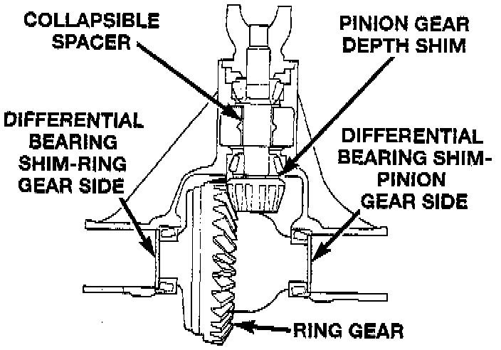

General Information

The 216 Rear Beam-design Aluminum (RBA) axle housing has an aluminum center casting (differential housing) with axle shaft tubes extending from either side. The tubes are pressed into the differential housing to form a one-piece axle housing.
The integral type housing, hypoid gear design has the center-line of the pinion set below the center-line of the ring gear.
The axle has a vent hose to relieve internal pressure caused by lubricant vaporization and internal expansion.
The axles are equipped with semi-floating axle shafts, meaning that vehicle load is supported by the axle shaft and bearings. The axle shafts are retained by C-clips in the differential side gears.
The cover provides a means for servicing the differential without removing the axle.
For vehicles equipped with ABS brakes, the axles have a tone ring pressed onto the axle shaft. Use care when removing axle shafts to ensure that the tone wheel or the wheel speed sensor are not damaged.
The 216 RBA axle has the assembly part number and gear ratio listed on a tag. The tag is attached to the differential housing by a cover bolt. Build date identification codes are stamped on the cover side of an axle shaft tube.
The differential case is a one-piece design. The differential pinion mate shaft is retained with a threaded pin. Differential bearing preload and ring gear backlash is adjusted by the use of selective spacer shims. Pinion bearing preload is set and maintained by the use of a collapsible spacer.